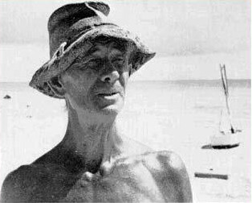

The Hermit of Suwarrow
The adventures of Tom Neale (1902-1977)
Tom Neale spent a total of fourteen years alone on a little island in the Suwarrow Atoll in the South Pacific, where he found peace and happiness in solitude. We have a look at this extraordinary life.
This article is part of a year-long series in which we examine six different philosophies of happiness and how they apply to today’s life. Find all the articles in this series here. Find all articles about hermits here.
If you like reading about philosophy, here's a free, weekly newsletter with articles just like this one: Send it to me!
To pack up and go, to leave everything behind and move alone to a tropical paradise, with no other worries than having to pick up a coconut or two for one’s next meal… This is a dream that many of us have had from time to time. One person did it.
Meet Tom Neale, sole inhabitant of the Suwarrow Atoll in the South Pacific for a total of fourteen years.
Life before Suwarrow
Thomas Francis Neale was born in New Zealand, but as soon as he found an opportunity with the Royal New Zealand Navy, he left to explore the Pacific islands. He lived in many different places around the Pacific, doing various jobs, and for a few years he was a shopkeeper in Tahiti. It was only in 1945, when he was 43 years old, that he first visited Suwarrow briefly with a supply ship — and immediately he knew that this was the place he wanted to call his home. But at this time, with the Second World War going on all around, there was no way how he could relocate to the island. On the island there was a military outpost, where a handful of soldiers were keeping watch in a small hut. It was only much later, after the end of the war, in 1952, that Tom Neale finally managed to get a lift to the island.
He was never a rich man. He didn’t have much interest in material goods and in a more stable career path, and he was happy to make do with occasional jobs that left him enough free time to dream of a life outside of civilisation. In fact, his book about his adventure begins with the words of a true Epicurean:
So he was never in a position to have his own boat with which he could reach the island, or the ability to buy crates full of supplies for his adventure. But he was a hard-working man who was able to make his own way and who could handle the challenges of a life in nature:
He might have lived this life forever, had there not been the occasional friends who travelled the islands and who told him in long evenings about the pristine and quiet places out there, and especially about the island of his dreams, Suwarrow. But there were no boats going there. With the war over, the coast-watchers had left and the atoll was far off the common shipping routes. It took Neale another seven years until finally, in 1952, an acquaintance of his, who owned a trading ship, offered to take him to Suwarrow if Neale would pay the thirty dollars that diverting the ship would cost. Neale immediately agreed. He suddenly found himself with two weeks to prepare for his move into nowhere — and with 49 pounds, all his savings, that he could use to buy whatever he would need for a life as a Pacific castaway.

In her honest and entertaining book “One Hundred Days of Solitude: Losing Myself and Finding Grace on a Zen Retreat,” Zen teacher Jane Dobisz recalls the three months she spent as a young person alone in a hut in the woods, bowing, chanting and meditating.
Shopping list for a desert island
In his book, Neale has a whole, very enjoyable chapter about how he went shopping for his one-way trip out. He knew that there would be the old hut of the coast-watchers for shelter. There would be coconuts on the islands, crabs, fish. He knew how to use a spear to fish. There would be enough water from the rain. Nature itself would take care of most of his survival needs; so in shopping, he could concentrate on necessary tools and also take some luxuries with him. He bought a fifty-pound sack of flour, needles for sewing, razor-blades and four tubes of toothpaste.

Sitting comfortably on one’s sofa, seventy years or so later, one can wonder in amusement about Neale’s choices. Toothpaste? Four tubes? How long were these supposed to last? Two bottles of ink and “some paper”? Forty pounds of coffee beans?
Despite the occasional naivete of his shopping list, Neale was very much aware that he was probably leaving civilisation forever:
He also took his cat along. And then the day came. On October 1st, 1952, Tom Neale set foot on the boat that would bring him to the island of his dreams.

Tom Neale.
Hermit life
After arriving and enjoying the quiet of the first day and night in solitude, Tom Neale begins to settle in:
We’ll leave Tom Neale here. In his book, he relates his adventure in great and greatly entertaining detail: how he planted a garden, how he got rid of the island’s pigs, how he slowly created a home for himself, and precisely how he spent each day. His afternoon cup of tea, his walks along the beach, his trips to the other islands of the lagoon using the coast-watchers’ old boat. All in all, he stayed three times on Suwarrow. After his first trip, he had to leave because of a back injury that almost killed him. Alone and unable to move, he just managed to survive until a passing boat found him and helped him return to Rarotonga, the next inhabited place on the map.
He returned two more times to Suwarrow, for a total of over fourteen years on the island. He left for the last time in 1977, when he was diagnosed with stomach cancer. He died the same year.
You can read Tom Neale’s extraordinary diary of his adventure on Suwarrow Atoll “An Island to Oneself” for free at: http://riverbendnelligen.com/tomneale
Hermits and spiritual calling
Tom Neale is an interesting kind of hermit, if he is one at all. It’s not clear how to make sense of him in the context of hermits.
Often, one would assume that some kind of spiritual calling should be one of the necessary conditions for being called a hermit. Most hermits we think of, from the Desert Fathers to the Daoist anchorites on the Zhongnan mountains, are religious figures who embrace the solitary life in order to be closer to God.
Not so Tom Neale. In his book, he rarely mentions God, and where he does, it is in everyday expressions like “my God,” or “for God’s sake.” The only place where God is mentioned outside of a fixed phrase like that is when he says (in the passage we quoted above): “I chose to live in the Pacific islands because life there moves at the sort of pace which you feel God must have had in mind originally when He made the sun to keep us warm and provided the fruits of the earth for the taking.” That’s also using God as a figure of speech, a way of referring to the design of an unspoiled nature, rather than as the target of a spiritual quest.
But clearly, Tom Neale was on a quest of some kind. It was his quest to flee human society, to return to nature and to a life that he considered more meaningful, one in which he could live in peace and harmony with nature, using all his own skills, abilities and resources to survive. But does this count as a properly “spiritual” quest?
It would certainly be strange to limit spirituality to beliefs that involve a god of some kind. Daoism does not have the belief in a god at its core (although in reality it’s often mixed with various religious elements). Buddhism does not directly refer to a god, although Buddha is regularly depicted with attributes of a deity. The Jedi religion in Star Wars is clearly spiritual but lacks a god. Yoga, martial arts and Japanese arts like flower arrangement and the tea ceremony can be pursued in a spiritual fashion, but again are not rooted in a particular belief in some god from which they derive their meaning.
And if drinking tea and arranging flowers can be spiritual pursuits, why would we exclude “living in solitude” and “mindfully tending to one’s survival in harmony with nature” from the list of spiritual quests?

Hermits and Happiness
Hermits, from the Greek “eremites,” (=men of the desert), are found in all cultures and at all times. In this article, we look at the phenomenon of hermit life as a whole, before we go into more detail in future posts in this series.
Spiritual order and mundane orderliness
Perhaps the spirituality of the hermit has another, even deeper affinity to rituals like the tea ceremony and the art of archery or flower arrangement.
One thing that hermits almost universally do is impose a human order on the wildness of nature.
Hermits, despite their image of living in nature, often are very keen on distinguishing themselves and their ways from those of wild animals. Tarzan, despite his living in nature, is more of an animal than a proper hermit. But Tom Neale, careful to dry his tea towel on the clothesline, is certainly not a wild beast. One day, visitors arrive and he shows them around his hut:
Hermits do not blend into nature; rather, their hermitages create an outpost of civilisation within nature. If the spiritual is the mark of the hermit, then orderliness is the mark of the spiritual: from the strict order of the ritual, to the preparation of the right food, to the arrangement of the hermit’s clean cup and plate on a shelf, to writing poetry and chanting mantras, the hermit’s life is filled with attempts to impose their own vision of the divine on the wildness and disorderliness of nature.
The hermit’s hut, then, is a spiritual outpost of humanity. The symbolic order inside the hermit’s hut recalls the civilisation that the hermit rejected and left, but that nonetheless forms the pedestal upon which the hermit stands when he stretches his arms towards the divine.
But more than that: the order in the hermit’s life is an outward manifestation of the order inside the hermit’s mind. The peacefulness and tranquillity of the hermit’s spirit mirrors the orderliness of creation, the finely tuned and precisely arranged mechanisms of nature or the infinite wisdom and clockwork-like order of God’s design for the universe.
Order and chaos
And there’s a last, much more practical reason for the orderliness of a hermit’s hut. By definition, a closed system, which a hermitage aspires to be in some respects, must maintain its own internal order.
A disordered system requires some input from outside in order to return to order. When I abandon my socks in the living room, I count on the fact that my partner will pick them up and return them to the laundry pile. When I generate a bag of household garbage, I rely on the city’s services to take it away and make it disappear out of sight.
A hermit does not have these options. Whatever disorder the hermit’s life brings to the world, the same hermit has to deal with and undo. Otherwise, the hermit would irreversibly degrade their surroundings until they could not live in the same place anymore. Like on the International Space Station, where every glass of water gets recycled from urine back to water, and every piece of packaging has to be collected and returned to Earth, a hermit’s hut has to work in the same cyclical way. Disorder is not an option, simply because the hermitage needs to stay entropy-neutral in order to remain a stable environment in the long run.
Postscript
In the “Postscript” to his book, written after the second stint on Suwarrow, Tom Neale says goodbye to his hut on the tropical beach:
Four years later, Tom Neale was back on his island, where he would stay another ten years, right up until his death.
Thanks for reading! You can find an online copy of Tom Neale’s book “An Island of One’s Own” at: http://riverbendnelligen.com/tomneale. Cover image: Tom Neale.